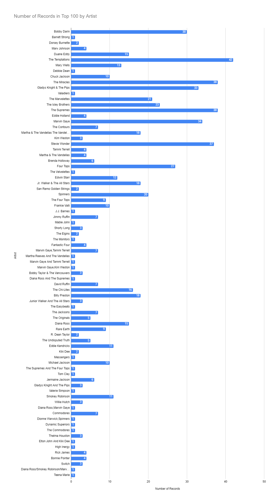
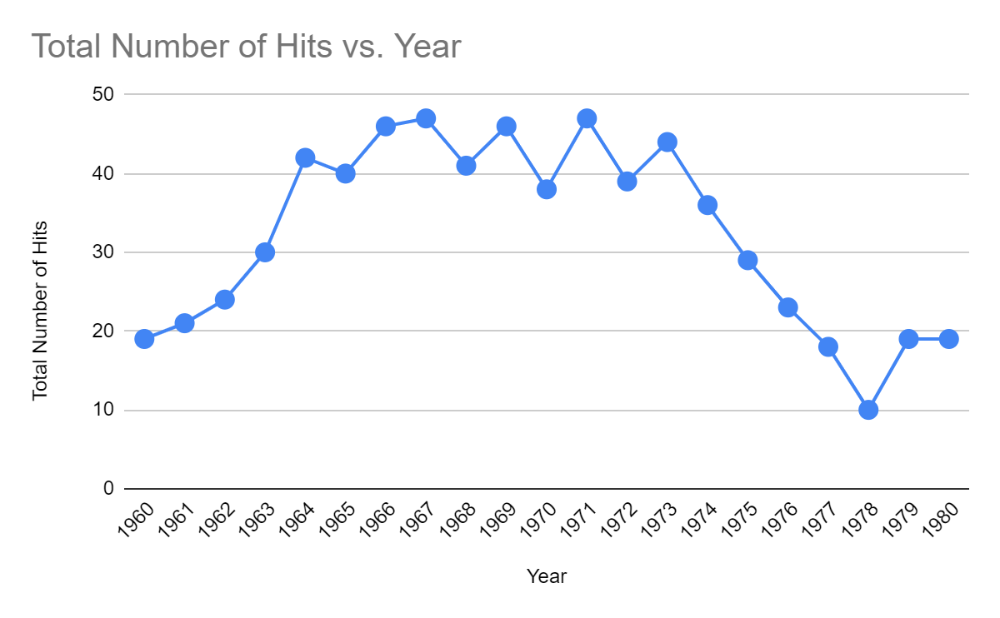
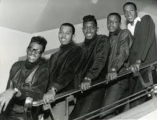

Introduction
After its inception in 1959, the Motown Record Company thrived as an example of an independently run and successful Black business that produced over 500 chart-topping hits. Motown settled itself against the backdrop of one of the most turbulent and movement driven times in US history. The music being produced behind the doors of a two-story house which founder Berry Gordy hung the sign, “Hitsville USA,” encouraged America’s youth, urging them to look beyond the racial divides destroying the United States and to simply sing and dance together in a time where the theme of unity was becoming increasingly important.
To the music fans of the 60s, the sound of Motown became one of the most recognizable and significant musical movements. Producing legends such as Marvin Gaye, Diana Ross, Stevie Wonder, The Temptations, and the Jackson Five, Motown Records competed with the “British Invasion” and “the Protest Movement,” in 1960s music. But what made Motown so successful? Was it the unique use of big band and gospel music that made it stand apart from the rest of the music industry? Or was it’s placement in Detroit and relationship to the Civil Rights Movement that made Motown so memorable? Motown is often said to have had little or no impact on the political and social revolution of the time because Motown did not produce “message music” (CITE). We argue, though, that Motown embodied one of the main principles the Civil Rights Movement preached most: black success and independence. Using information gathered by Matthias Mauch, Robert M. MacCallum, Mark Levy and Armand M. Leroi for their article, “The evolution of popular music: USA 1960–2010,” where they tracked popular music across a span of 50 years, we aim to analyze the hits produced by Motown Records and examine their rise and fall in comparison to other mainstream music of the time, and what this meant for the success of Black people in the United States as they fought for their right to be heard and seen.
Many historians who have touched on the significance and impact of Motown often refer to Berry Gordy’s methods of appealing the “Motown sound” of big band and gospel music to both Black and white audiences. Author and historian David Brackett proposed that the success was formulaic and had much to do with production that mirrored an assembly-line: if a song was ranked high on the R&B charts, it meant that African American DJs were playing the songs on African American radio stations to a predominantly African American crowd. If a song was high up on the Pop charts, however, it meant that all races were listening to it (CITE). For Berry Gordy and Motown, it meant that white people were listening to their music. According to historians, Gordy was so focused on ensuring records sold that “The Marvelettes’ Please Mr. Postman had only a line drawing of a mailbox on the cover; Bye Bye Baby by Mary Wells showed only a love letter…Meet the Temptations had photographed the group so darkly against a dark background that they were almost in silhouette” (CITE). It’s believed that by hiding the race of the artists, white people more likely to buy the records.
The Motown image and sound was structured specifically to be appealing to the masses, one that made it seem like Berry Gordy was pulling away from any interaction from the Civil Rights Movement. And while Gordy never publicly made his intentions of supporting the goals of the Movement, the creation and success of his record label hit several of the targets its leaders were aiming for: Black success and economic independence as shown by the trends of the music.
Data Visualization 1
Data Visualization 2

Data Visualization 3

Data Visualization 4

Data Visualization 5
Landing Page is just HTML and CSS with a splash of SCSS for users who demand some deeper customization options. Out of the box, just add your content and images, and your new landing page will be ready to go!